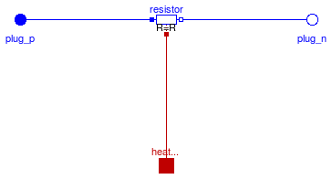
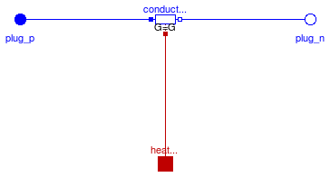
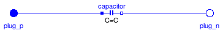
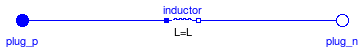
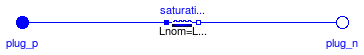
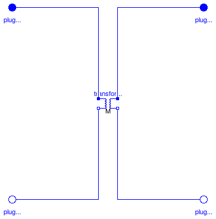
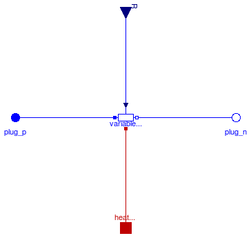
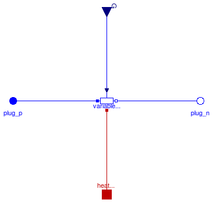
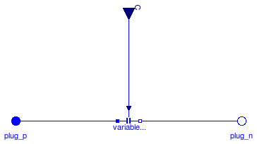
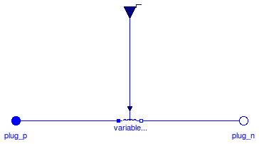

This package contains basic analog electrical multiphase components.
Extends from Modelica.Icons.Library2 (Icon for library where additional icon elements shall be added).
| Name | Description |
|---|---|
| Star | Star-connection |
| Delta (polygon) connection | |
| Connect one (positive) Pin | |
| Connect one (negative) Pin | |
| Ideal linear electrical resistors | |
| Ideal linear electrical conductors | |
| Ideal linear electrical capacitors | |
| Inductor | Ideal linear electrical inductors |
| Simple model of inductors with saturation | |
| Transformer | Multiphase Transformer |
| Ideal linear electrical resistors with variable resistance | |
| Ideal linear electrical conductors with variable conductance | |
| VariableCapacitor | Ideal linear electrical capacitors with variable capacitance |
| Ideal linear electrical inductors with variable inductance |
Connects all pins of plug_p to pin_n, thus establishing a so-called star-connection.
| Type | Name | Default | Description |
|---|---|---|---|
| Integer | m | 3 | number of phases |
| Type | Name | Description |
|---|---|---|
| PositivePlug | plug_p | |
| NegativePin | pin_n |
model Star "Star-connection"
parameter Integer m(final min=1) = 3 "number of phases";
Interfaces.PositivePlug plug_p(final m=m);
Modelica.Electrical.Analog.Interfaces.NegativePin pin_n;
equation
for j in 1:m loop
connect(plug_p.pin[j],pin_n);
end for;
end Star;
 Modelica.Electrical.MultiPhase.Basic.Delta
Modelica.Electrical.MultiPhase.Basic.Delta
Connects in a cyclic way plug_n.pin[j] to plug_p.pin[j+1], thus establishing a so-called delta (or polygon) connection when used in parallel to another component.
| Type | Name | Default | Description |
|---|---|---|---|
| Integer | m | 3 | number of phases |
| Type | Name | Description |
|---|---|---|
| PositivePlug | plug_p | |
| NegativePlug | plug_n |
model Delta "Delta (polygon) connection"
parameter Integer m(final min=2) = 3 "number of phases";
Interfaces.PositivePlug plug_p(final m=m);
Interfaces.NegativePlug plug_n(final m=m);
equation
for j in 1:m loop
if j<m then
connect(plug_n.pin[j],plug_p.pin [j+1]);
else
connect(plug_n.pin[j],plug_p.pin [1]);
end if;
end for;
end Delta;
 Modelica.Electrical.MultiPhase.Basic.PlugToPin_p
Modelica.Electrical.MultiPhase.Basic.PlugToPin_p

Connects pin k of plug_p to pin_p, leaving the other pins of plug_p unconnected.
| Type | Name | Default | Description |
|---|---|---|---|
| Integer | m | 3 | number of phases |
| Integer | k | phase index |
| Type | Name | Description |
|---|---|---|
| PositivePlug | plug_p | |
| PositivePin | pin_p |
model PlugToPin_p "Connect one (positive) Pin"
parameter Integer m(final min=1) = 3 "number of phases";
parameter Integer k(final min=1, final max=m, start = 1) "phase index";
Interfaces.PositivePlug plug_p(final m=m);
Modelica.Electrical.Analog.Interfaces.PositivePin pin_p;
equation
pin_p.v = plug_p.pin[k].v;
for j in 1:m loop
plug_p.pin[j].i = if j == k then -pin_p.i else 0;
end for;
end PlugToPin_p;

Connects pin k of plug_n to pin_n, leaving the other pins of plug_n unconnected.
| Type | Name | Default | Description |
|---|---|---|---|
| Integer | m | 3 | number of phases |
| Integer | k | phase index |
| Type | Name | Description |
|---|---|---|
| NegativePlug | plug_n | |
| NegativePin | pin_n |
model PlugToPin_n "Connect one (negative) Pin"
parameter Integer m(final min=1) = 3 "number of phases";
parameter Integer k(final min=1, final max=m, start = 1) "phase index";
Interfaces.NegativePlug plug_n(final m=m);
Modelica.Electrical.Analog.Interfaces.NegativePin pin_n;
equation
pin_n.v = plug_n.pin[k].v;
for j in 1:m loop
plug_n.pin[j].i = if j == k then -pin_n.i else 0;
end for;
end PlugToPin_n;
 Modelica.Electrical.MultiPhase.Basic.Resistor
Modelica.Electrical.MultiPhase.Basic.Resistor
Contains m resistors (Modelica.Electrical.Analog.Basic.Resistor)
Extends from Interfaces.TwoPlug (Component with one m-phase electric port), Modelica.Electrical.MultiPhase.Interfaces.ConditionalHeatPort (Partial model to include conditional HeatPorts in order to describe the power loss via a thermal network).
| Type | Name | Default | Description |
|---|---|---|---|
| Integer | m | 3 | number of phases |
| Resistance | R[m] | Resistances R_ref at temperatures T_ref [Ohm] | |
| Temperature | T_ref[m] | fill(300.15, m) | Reference temperatures [K] |
| LinearTemperatureCoefficient | alpha[m] | zeros(m) | Temperature coefficients of resistances at reference temperatures [1/K] |
| Integer | mh | m | Number of heatPorts=number of phases |
| Boolean | useHeatPort | false | =true, if all HeatPorts are enabled |
| Temperature | T[mh] | T_ref | Fixed device temperatures if useHeatPort = false [K] |
| Type | Name | Description |
|---|---|---|
| PositivePlug | plug_p | |
| NegativePlug | plug_n | |
| HeatPort_a | heatPort[mh] |
model Resistor "Ideal linear electrical resistors"
extends Interfaces.TwoPlug;
parameter Modelica.SIunits.Resistance R[m](start=fill(1,m))
"Resistances R_ref at temperatures T_ref";
parameter Modelica.SIunits.Temperature T_ref[m]=fill(300.15,m)
"Reference temperatures";
parameter Modelica.SIunits.LinearTemperatureCoefficient alpha[m]=zeros(m)
"Temperature coefficients of resistances at reference temperatures";
extends Modelica.Electrical.MultiPhase.Interfaces.ConditionalHeatPort(final mh=m, T = T_ref);
Modelica.Electrical.Analog.Basic.Resistor resistor[m](
final R=R,
final T_ref=T_ref,
final alpha=alpha,
each final useHeatPort = useHeatPort,
final T=T);
equation
connect(resistor.p, plug_p.pin);
connect(resistor.n, plug_n.pin);
connect(resistor.heatPort, heatPort);
end Resistor;
Modelica.Electrical.MultiPhase.Basic.Conductor
Contains m conductors (Modelica.Electrical.Analog.Basic.Conductor)
Extends from Interfaces.TwoPlug (Component with one m-phase electric port), Modelica.Electrical.MultiPhase.Interfaces.ConditionalHeatPort (Partial model to include conditional HeatPorts in order to describe the power loss via a thermal network).
| Type | Name | Default | Description |
|---|---|---|---|
| Integer | m | 3 | number of phases |
| Conductance | G[m] | Conductances G_ref at temperatures T_ref [S] | |
| Temperature | T_ref[m] | fill(300.15, m) | Reference temperatures [K] |
| LinearTemperatureCoefficient | alpha[m] | zeros(m) | Temperature coefficients of conductances at reference temperatures [1/K] |
| Integer | mh | m | Number of heatPorts=number of phases |
| Boolean | useHeatPort | false | =true, if all HeatPorts are enabled |
| Temperature | T[mh] | T_ref | Fixed device temperatures if useHeatPort = false [K] |
| Type | Name | Description |
|---|---|---|
| PositivePlug | plug_p | |
| NegativePlug | plug_n | |
| HeatPort_a | heatPort[mh] |
model Conductor "Ideal linear electrical conductors"
extends Interfaces.TwoPlug;
parameter Modelica.SIunits.Conductance G[m](start=fill(1,m))
"Conductances G_ref at temperatures T_ref";
parameter Modelica.SIunits.Temperature T_ref[m]=fill(300.15,m)
"Reference temperatures";
parameter Modelica.SIunits.LinearTemperatureCoefficient alpha[m]=zeros(m)
"Temperature coefficients of conductances at reference temperatures";
extends Modelica.Electrical.MultiPhase.Interfaces.ConditionalHeatPort(final mh=m, T = T_ref);
Modelica.Electrical.Analog.Basic.Conductor conductor[m](
final G=G,
final T_ref=T_ref,
final alpha=alpha,
each final useHeatPort = useHeatPort,
final T=T);
equation
connect(plug_p.pin, conductor.p);
connect(plug_n.pin, conductor.n);
connect(conductor.heatPort, heatPort);
end Conductor;

Contains m capacitors (Modelica.Electrical.Analog.Basic.Capacitor)
Extends from Interfaces.TwoPlug (Component with one m-phase electric port).
| Type | Name | Default | Description |
|---|---|---|---|
| Integer | m | 3 | number of phases |
| Capacitance | C[m] | Capacitance [F] |
| Type | Name | Description |
|---|---|---|
| PositivePlug | plug_p | |
| NegativePlug | plug_n |
model Capacitor "Ideal linear electrical capacitors" extends Interfaces.TwoPlug; parameter Modelica.SIunits.Capacitance C[m](start=fill(1, m)) "Capacitance"; Modelica.Electrical.Analog.Basic.Capacitor capacitor[m](final C=C); equation connect(capacitor.p, plug_p.pin); connect(capacitor.n, plug_n.pin); end Capacitor;
 Modelica.Electrical.MultiPhase.Basic.Inductor
Modelica.Electrical.MultiPhase.Basic.Inductor
Contains m inductors (Modelica.Electrical.Analog.Basic.Inductor)
Extends from Interfaces.TwoPlug (Component with one m-phase electric port).
| Type | Name | Default | Description |
|---|---|---|---|
| Integer | m | 3 | number of phases |
| Inductance | L[m] | Inductance [H] |
| Type | Name | Description |
|---|---|---|
| PositivePlug | plug_p | |
| NegativePlug | plug_n |
model Inductor "Ideal linear electrical inductors" extends Interfaces.TwoPlug; parameter Modelica.SIunits.Inductance L[m](start=fill(1, m)) "Inductance"; Modelica.Electrical.Analog.Basic.Inductor inductor[m](final L=L); equation connect(inductor.p, plug_p.pin); connect(inductor.n, plug_n.pin); end Inductor;
 Modelica.Electrical.MultiPhase.Basic.SaturatingInductor
Modelica.Electrical.MultiPhase.Basic.SaturatingInductor
Contains m saturating inductors (Modelica.Electrical.Analog.Basic.SaturatingInductor)
Attention!!!
Each element of the array of saturatingInductors is only dependent on the current flowing through this element.
| Type | Name | Default | Description |
|---|---|---|---|
| Integer | m | 3 | number of phases |
| Current | Inom[m] | Nominal current [A] | |
| Inductance | Lnom[m] | Nominal inductance at Nominal current [H] | |
| Inductance | Lzer[m] | Inductance near current=0 [H] | |
| Inductance | Linf[m] | Inductance at large currents [H] |
| Type | Name | Description |
|---|---|---|
| PositivePlug | plug_p | |
| NegativePlug | plug_n |
model SaturatingInductor "Simple model of inductors with saturation"
extends Interfaces.TwoPlug;
parameter Modelica.SIunits.Current Inom[m](start=fill(1,m)) "Nominal current";
parameter Modelica.SIunits.Inductance Lnom[m](start=fill(1,m))
"Nominal inductance at Nominal current";
parameter Modelica.SIunits.Inductance Lzer[m](start={2*Lnom[j] for j in 1:m})
"Inductance near current=0";
parameter Modelica.SIunits.Inductance Linf[m](start={Lnom[j]/2 for j in 1:m})
"Inductance at large currents";
Modelica.Electrical.Analog.Basic.SaturatingInductor saturatingInductor[m](
final Inom=Inom,
final Lnom=Lnom,
final Lzer=Lzer,
final Linf=Linf);
equation
connect(saturatingInductor.p, plug_p.pin);
connect(saturatingInductor.n, plug_n.pin);
end SaturatingInductor;

Contains m transformers (Modelica.Electrical.Analog.Basic.Transformer)
Extends from Interfaces.FourPlug (Component with two m-phase electric ports).
| Type | Name | Default | Description |
|---|---|---|---|
| Integer | m | 3 | number of phases |
| Inductance | L1[m] | Primary inductance [H] | |
| Inductance | L2[m] | Secondary inductance [H] | |
| Inductance | M[m] | Coupling inductance [H] |
| Type | Name | Description |
|---|---|---|
| PositivePlug | plug_p1 | |
| PositivePlug | plug_p2 | |
| NegativePlug | plug_n1 | |
| NegativePlug | plug_n2 |
model Transformer "Multiphase Transformer"
extends Interfaces.FourPlug;
parameter Modelica.SIunits.Inductance L1[m](start=fill(1, m))
"Primary inductance";
parameter Modelica.SIunits.Inductance L2[m](start=fill(1, m))
"Secondary inductance";
parameter Modelica.SIunits.Inductance M[m](start=fill(1, m))
"Coupling inductance";
Modelica.Electrical.Analog.Basic.Transformer transformer[m](
final L1=L1,
final L2=L2,
final M=M);
equation
connect(plug_p1.pin, transformer.p1);
connect(plug_p2.pin, transformer.p2);
connect(plug_n1.pin, transformer.n1);
connect(plug_n2.pin, transformer.n2);
end Transformer;

Contains m variable resistors (Modelica.Electrical.Analog.Basic.VariableResistor)
Attention!!!
It is recomended that none of the R_Port signals should not cross the zero value.
Otherwise depending on the surrounding circuit the probability of singularities is high.
| Type | Name | Default | Description |
|---|---|---|---|
| Integer | m | 3 | number of phases |
| Temperature | T_ref[m] | fill(300.15, m) | Reference temperatures [K] |
| LinearTemperatureCoefficient | alpha[m] | zeros(m) | Temperature coefficients of resistances at reference temperatures [1/K] |
| Integer | mh | m | Number of heatPorts=number of phases |
| Boolean | useHeatPort | false | =true, if all HeatPorts are enabled |
| Temperature | T[mh] | T_ref | Fixed device temperatures if useHeatPort = false [K] |
| Type | Name | Description |
|---|---|---|
| PositivePlug | plug_p | |
| NegativePlug | plug_n | |
| HeatPort_a | heatPort[mh] | |
| input RealInput | R[m] |
model VariableResistor
"Ideal linear electrical resistors with variable resistance"
extends Interfaces.TwoPlug;
parameter Modelica.SIunits.Temperature T_ref[m]=fill(300.15,m)
"Reference temperatures";
parameter Modelica.SIunits.LinearTemperatureCoefficient alpha[m]=zeros(m)
"Temperature coefficients of resistances at reference temperatures";
extends Modelica.Electrical.MultiPhase.Interfaces.ConditionalHeatPort(final mh=m, T = T_ref);
Modelica.Blocks.Interfaces.RealInput R[m];
Modelica.Electrical.Analog.Basic.VariableResistor variableResistor[m](
final T_ref=T_ref,
final alpha=alpha,
each final useHeatPort=useHeatPort,
final T=T);
equation
connect(variableResistor.p, plug_p.pin);
connect(variableResistor.n, plug_n.pin);
connect(R, variableResistor.R);
connect(variableResistor.heatPort, heatPort);
end VariableResistor;

Contains m variable conductors (Modelica.Electrical.Analog.Basic.VariableConductor)
Attention!!!
It is recomended that none of the G_Port signals should not cross the zero value.
Otherwise depending on the surrounding circuit the probability of singularities is high.
| Type | Name | Default | Description |
|---|---|---|---|
| Integer | m | 3 | number of phases |
| Temperature | T_ref[m] | fill(300.15, m) | Reference temperatures [K] |
| LinearTemperatureCoefficient | alpha[m] | zeros(m) | Temperature coefficients of conductances at reference temperatures [1/K] |
| Integer | mh | m | Number of heatPorts=number of phases |
| Boolean | useHeatPort | false | =true, if all HeatPorts are enabled |
| Temperature | T[mh] | T_ref | Fixed device temperatures if useHeatPort = false [K] |
| Type | Name | Description |
|---|---|---|
| PositivePlug | plug_p | |
| NegativePlug | plug_n | |
| HeatPort_a | heatPort[mh] | |
| input RealInput | G[m] |
model VariableConductor
"Ideal linear electrical conductors with variable conductance"
extends Interfaces.TwoPlug;
parameter Modelica.SIunits.Temperature T_ref[m]=fill(300.15,m)
"Reference temperatures";
parameter Modelica.SIunits.LinearTemperatureCoefficient alpha[m]=zeros(m)
"Temperature coefficients of conductances at reference temperatures";
extends Modelica.Electrical.MultiPhase.Interfaces.ConditionalHeatPort(final mh=m, T = T_ref);
Modelica.Blocks.Interfaces.RealInput G[m];
Modelica.Electrical.Analog.Basic.VariableConductor variableConductor[m](
final T_ref=T_ref,
final alpha=alpha,
each final useHeatPort=useHeatPort,
final T=T);
equation
connect(variableConductor.p, plug_p.pin);
connect(variableConductor.n, plug_n.pin);
connect(G, variableConductor.G);
connect(variableConductor.heatPort, heatPort);
end VariableConductor;

Contains m variable capacitors (Modelica.Electrical.Analog.Basic.VariableCapacitor)
It is required that each C_Port.signal ≥ 0, otherwise an
assertion is raised. To avoid a variable index system,
C = Cmin, if 0 ≤ C_Port.signal < Cmin, where
Cmin is a parameter with default value Modelica.Constants.eps.
| Type | Name | Default | Description |
|---|---|---|---|
| Integer | m | 3 | number of phases |
| Capacitance | Cmin[m] | fill(Modelica.Constants.eps,... | minimum Capacitance [F] |
| Type | Name | Description |
|---|---|---|
| PositivePlug | plug_p | |
| NegativePlug | plug_n | |
| input RealInput | C[m] |
model VariableCapacitor
"Ideal linear electrical capacitors with variable capacitance"
extends Interfaces.TwoPlug;
parameter Modelica.SIunits.Capacitance Cmin[m]=fill(Modelica.Constants.eps,m)
"minimum Capacitance";
Modelica.Blocks.Interfaces.RealInput C[m];
Modelica.Electrical.Analog.Basic.VariableCapacitor variableCapacitor[m](final Cmin = Cmin);
equation
connect(variableCapacitor.p, plug_p.pin);
connect(variableCapacitor.n, plug_n.pin);
connect(C, variableCapacitor.C);
end VariableCapacitor;
 Modelica.Electrical.MultiPhase.Basic.VariableInductor
Modelica.Electrical.MultiPhase.Basic.VariableInductor
Contains m variable inductors (Modelica.Electrical.Analog.Basic.VariableInductor)
It is required that each L_Port.signal ≥ 0, otherwise an
assertion is raised. To avoid a variable index system,
L = Lmin, if 0 ≤ L_Port.signal < Lmin, where
Lmin is a parameter with default value Modelica.Constants.eps.
| Type | Name | Default | Description |
|---|---|---|---|
| Integer | m | 3 | number of phases |
| Inductance | Lmin[m] | fill(Modelica.Constants.eps,... | minimum Inductance [H] |
| Type | Name | Description |
|---|---|---|
| PositivePlug | plug_p | |
| NegativePlug | plug_n | |
| input RealInput | L[m] |
model VariableInductor
"Ideal linear electrical inductors with variable inductance"
extends Interfaces.TwoPlug;
parameter Modelica.SIunits.Inductance Lmin[m]=fill(Modelica.Constants.eps,m)
"minimum Inductance";
Modelica.Blocks.Interfaces.RealInput L[m];
Modelica.Electrical.Analog.Basic.VariableInductor variableInductor[m](final Lmin
= Lmin);
equation
connect(variableInductor.p, plug_p.pin);
connect(variableInductor.n, plug_n.pin);
connect(L, variableInductor.L);
end VariableInductor;